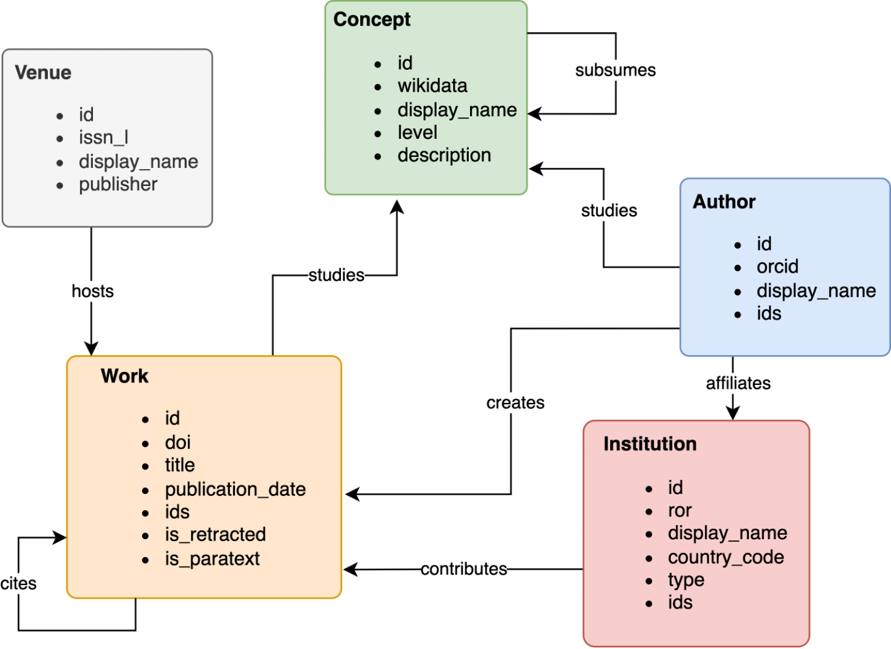

an R package to interface with OpenAlex API

You can look for an entity interactively at https://explore.openalex.org/. Or:
jj_hadley_au %>%
mutate(id = openalexR:::shorten_oaid(id)) %>%
select(id, display_name, works_count)# A tibble: 7 × 3
id display_name works_count
<chr> <chr> <int>
1 A2005589281 Hadley Wickham 403
2 A3161869907 JJ Allaire 106
3 A4331010736 Hadley Wickham 3
4 A3104842739 Hadley Wickham 2
5 A4344856418 Hadley Wickham 2
6 A4302389106 Hadley Wickham 1
7 A4337522047 Hadley Wickham 1Give it a try 🌟